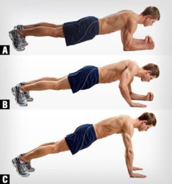

Welcome to Ejercicios efectivos de tríceps
▷ Mejores ejercicios para tríceps estimulando sus 3 cabezas
2021.06.26 19:32
Saltar al contenido Cursos Rutinas Entrenamiento Fitness Musculación Running Nutrición Alimentación Suplementación Salud Salud y Bienestar Lesiones Deporte Fútbol Baloncesto Natación Ciclismo Tenis y Pádel Triatlón Surf Deportes de combate Tiro con arco Ed. Física Otros Fisiología Neurociencia Coaching Nuevas tecnologías Entrenamiento de musculación
Mejores ejercicios para tríceps: cuáles y para qué
por Joaquin Vico Plaza 10 enero, 2021En este artículo detallamos los mejores ejercicios para tríceps que estimulan de forma idónea, cada una de las 3 cabezas que lo componen.
Índice de Contenidos
1 Anatomía del tríceps braquial 1.1 Origen e inserción del tríceps braquial 1.2 Función del tríceps 2 Activación de las cabezas del tríceps según los grados de flexión de hombro 3 Aspectos a tener en cuenta en los ejercicios para tríceps 3.1 Posición de los hombros 3.1.1 Cabeza larga 3.1.2 Cabeza lateral y cabeza medial 3.2 Posición del codo 3.2.1 Cabeza larga y cabeza lateral 3.2.2 Cabeza medial 3.3 Fatiga 3.3.1 Cabeza larga y cabeza lateral 3.3.2 Cabeza medial 3.4 Tipo de agarre 3.4.1 Agarre neutro 3.4.2 Agarre prono 3.4.3 Agarre supino 3.5 Ancho del agarre 3.6 Codos 3.7 Muñeca 3.8 Ejercicios para tríceps 3.8.1 Cabeza larga 3.8.2 Cabeza lateral y medial 4 Grupo 1: Ejercicios para tríceps con flexión completa de hombro 4.1 Extensiones de tríceps sobre cabeza 4.2 Extensiones de tríceps sobre cabeza (carga anteroposterior) 5 Grupo 2: Ejercicios para tríceps con flexión parcial de hombro 5.1 Press francés 5.2 Press de banca con agarre estrecho 6 Grupo 3: Ejercicios para tríceps sin flexión de hombro 6.1 Jalón de tríceps (push down) 7 Grupo 4: Ejercicios para tríceps con extensión de hombro 7.1 Fondos de tríceps 7.2 Patadas traseras 8 Mejores ejercicios para tríceps 8.1 Cargas altas y repeticiones medias-bajas 8.2 Cargas medias y repeticiones medias 8.3 Cargas medias-bajas y repeticiones medias-altas 9 Conclusiones 10 Referencias bibliográficas Ayúdanos a difundirlo. El conocimiento tiene sentido sólo cuando se comparte.En este artículo no enumeramos simplemente los ejercicios para tríceps. Los agrupamos en 4 grupos según los estímulos que producen en el tríceps en general y en sus 3 cabezas en particular.
Para ello es importante que entiendas la anatomía del tríceps braquial y su biomecánica, y así, cuando veas diferentes ejercicios para tríceps en internet o en el gimnasio podrás distinguir de qué ejercicio se trata y para qué se utiliza.
Anatomía del tríceps braquial
El tríceps braquial es un músculo grande y grueso que se ocupa toda la parte posterior del brazo, entre el codo y el hombro (imagen 1). A menudo aparece en forma de herradura en la cara posterior del brazo (Tiwana & Bordoni, 2020).
Imagen 1. Tríceps braquialSe compone de 3 cabezas, de ahí su nombre ( tri = tres; ceps = cabezas).
Desde la parte exterior del brazo hacia la parte interna encontramos la cabeza lateral (externa), cabeza larga y cabeza medial (imagen 2).
La cabeza lateral y cabeza larga son de mayores dimensiones y ocultan en gran parte a la cabeza medial.
Imagen 2. Tres cabezas del tríceps braquialHablaremos en profundidad sobre cada una de ellas y como aumentar el énfasis en cada una, aunque no se pueden separar y se activarán todas en conjunto.
Origen e inserción del tríceps braquial
Los ejercicios para tríceps deben ser seleccionados para estimular las 3 cabezas del tríceps. Para ello es necesario conocer donde se originan y se insertan cada una de dichas cabezas.
La cabeza lateral (imagen 3), la cabeza larga (imagen 4) y la cabeza medial (imagen 5) se originan en lugares diferentes.
Las tres cabezas se insertan en el olécranon (la prominencia ósea del codo).
La cabeza larga y lateral convergen en un tendón, mientras que la cabeza medial se une al olécranon a través de un tendón más profundo e inicialmente separado (Madsen et al., 2006).
Imagen 3. Cabeza lateral del tríceps braquial Imagen 4. Cabeza larga del tríceps braquial Imagen 5. Cabeza medial del tríceps braquialUn detalle que es vital en la selección de ejercicios de tríceps es que la cabeza lateral y la cabeza medial son monoarticulares (actúan únicamente el codo), mientras que la cabeza larga es biarticular (actúa en codo y hombro).
Veremos a continuación por qué es tan importante ese detalle.
Función del tríceps
Las tres cabezas realizan la extensión del antebrazo en la articulación del codo (imagen 6). Además, estabilizan el codo cuando el antebrazo y la mano realizan movimientos finos como escribir (Tiwana & Bordoni, 2020).
La cabeza larga, además, produce una débil extensión del hombro y asiste a la estabilización de la articulación del hombro.
Imagen 6. Extensión de codoAunque la función es la misma, las tres cabezas no funcionan al unísono durante la extensión de codo (Hussain, Sundaraj, Subramaniam, & Lam, 2020).
Dependen del grado de flexión de hombro.
Activación de las cabezas del tríceps según los grados de flexión de hombro
La activación de la cabeza biarticular del tríceps ( cabeza larga ) es afectada por la posición del codo y de los hombros , mientras que las otras cabezas ( lateral y medial ) solo dependen de la angulación del codo (Davidson & Rice, 2010).
Existen por tanto, diferentes niveles de activación de cada una de las cabezas según los ángulos de flexión de hombro (Davidson & Rice, 2010).
Al variar la actividad de la cabeza larga, y como cada una de las tres cabezas depende del comportamiento de las otras dos, la activación y fuerza de la cabeza lateral y medial también se ve mediada por la flexión de hombro.
En la imagen 7 (Kholinne et al., 2018) se muestra una extensión de codo en 5 posiciones diferentes del hombro.
Imagen 7. Extensión de codo en 5 posiciones distintas de flexión de hombroEsta imagen es importante puesto que la utilizaremos como guía para elaborar los 4 grupos de ejercicios para tríceps en función de la posición del hombro:
Grupo 1. Flexión completa de hombro. 180° de flexión de hombro (E): brazos situados sobre la cabeza o ligeramente por debajo. Grupo 2. Flexión parcial de hombro . 90° de flexión de hombro (C): brazos extendidos en perpendicular al cuerpo, hasta 135° (D). Grupo 3. Sin flexión de hombro . 0° de flexión de hombro (A): codos pegados a los costados hasta 45° (B). Grupo 4. Ligera extensión de hombro . Menos de 0° de flexión de hombro (no aparece en la imagen, serían grados negativos). Los brazos por detrás del cuerpo.Aspectos a tener en cuenta en los ejercicios para tríceps
En todos los ejercicios para tríceps que puedes encontrar en este artículo, o en cualquier lugar, debes tener en cuenta los aspectos siguientes.
Los ejercicios para tríceps que exponemos aquí con peso libre, polea o gomas elásticas, en todas sus variantes, pueden realizarse también en las máquinas destinadas para ello.
En nuestro programa de entrenamiento debemos incluir ejercicios para tríceps que tengan patrones de movimiento y activación diferentes.
Todos los ejercicios para tríceps pueden parecerte iguales, y lo son. Se produce una extensión de codo en todos ellos .
Lo que cambia es la posición del hombro respecto al tronco, si flexionamos más o menos el codo, el agarre que utilizamos y el vector de fuerza .
Por tanto, variar nuestra postura es una manera simple y eficaz de estimular diferentes regiones musculares.
Posición de los hombros
Ya hemos comentado que las cabezas lateral y medial solo dependen del codo, pero como la activación de la cabeza larga depende también del hombro, todo se modifica con dicha posición del hombro.
Cabeza larga
A medida que el hombro se flexiona, la cabeza larga se estira (Landin & Thompson, 2011), encontrando cabeza larga en su punto máximo de estiramiento con una flexión completa de hombro.
Con 0° de flexión o con una ligera extensión de hombro (brazos por detrás del cuerpo), ocurre lo contrario, la cabeza larga se acorta más .
Cabeza lateral y cabeza medial
La elongación y contracción de la cabeza lateral y medial, al ser monoarticulares (dependen únicamente de la flexión y extensión del codo) no será mayor o menor con una posición diferente del hombro.
Pero en función de la participación de la cabeza larga, se activarán en mayor o menor medida, por lo que, indirectamente, también dependen de la posición del hombro.
Posición del codo
A continuación analizamos las activaciones musculares en los ejercicios para tríceps, según la posición del codo.
Cabeza larga y cabeza lateral
Producen una activación relativamente constante en todo el recorrido de la extensión de codo (Murray, Buchanan, & Delp, 2000).
Cabeza medial
A 0° de extensión de codo su actividad es menor que las otras cabezas , por lo que participa más al inicio de la contracción (Landin & Thompson, 2011; Madsen et al., 2006).
Requiere un mayor grado de flexión de codo para un estiramiento óptimo (Madsen et al., 2006). Es por ello que trabaja principalmente cuando el codo está muy flexionado y menos cuando está extendido.
Fatiga
A continuación analizamos la fatiga en las cabezas del tríceps.
Cabeza larga y cabeza lateral
La cabeza larga, junto con la cabeza lateral, comienzan a actuar en mayor medida pero se fatigan antes que la cabeza medial (Ali et al., 2015, 2014).
Cabeza medial
La cabeza medial está involucrada en todo tipo de extensiones de codo, mientras que las cabezas laterales y largas participan en la extensión del codo con cierta resistencia (Landin, Thompson, & Jackson, 2018).
Es por ello que la cabeza medial tarda más en fatigarse que las cabezas laterales y largas (Ali et al., 2015, 2014) debiendo tenerlo en cuenta si buscamos el aumento de masa muscular.
Yendo muy cerca del fallo para aprovechar esa activación de la cabeza medial con una fatiga de las cabezas lateral y larga.
Tipo de agarre
Vemos los tipos de agarre.
Agarre neutro
Las palmas de las manos se miran entre sí. La activación de las 3 cabezas es equilibrada.
Agarre prono
La posición de la mano cuando miramos el reloj de la muñeca. Favorece a la cabeza lateral.
Agarre supino
La posición contraria a la anterior. Favorece ligeramente a la cabeza medial .
Ancho del agarre
En todos los ejercicios para tríceps debemos escoger un ancho biacromial (anchura de los hombros).
Si separamos más las manos, disminuye la activación del bíceps braquial.
Codos
Los codos deben permanecer siempre estáticos en los ejercicios para tríceps, sin abrirse ni apuntar hacia afuera durante dichos ejercicios para tríceps.
Debemos contraer al máximo los tríceps al final del movimiento, pero sin bloquear los codos.
Muñeca
Se mantiene siempre en posición neutra en todos los ejercicios para tríceps. Sin flexión ni extensión.
Ejercicios para tríceps
A continuación vemos ejercicios para tríceps con énfasis en:
Cabeza larga
Es recomendable entrenarla en puntos de mayor estiramiento que añaden más esfuerzo que el que se da sin ella (Alves et al., 2018).
Grupo 1: Ejercicios para tríceps con flexión completa de hombros : La posición E) de la imagen 7 es la que pone mayor énfasis en la cabeza larga. Grupo 2: Ejercicios para tríceps con flexión parcial de hombros: Las posiciones D) y C) de la imagen 7 también ponen énfasis en la cabeza larga, aunque ligeramente menos.Cabeza lateral y medial
La cabeza medial y lateral no las podemos aislar entre sí, pero si podemos dejar ligeramente fuera de juego a la cabeza larga , para que actúen más estas cabezas.
Grupo 3: Ejercicios para tríceps sin flexión de hombro para enfatizar en cabeza lateral (principalmente) y medial. Grupo 4: Ejercicios para tríceps con ligera extensión de hombro para enfatizar en cabeza medial (principalmente) y lateral.Ver esta publicación en Instagram
Una publicación compartida de MundoEntrenamiento.com (@mundo_entrenamiento)
Grupo 1: Ejercicios para tríceps con flexión completa de hombro
Flexión de hombro a 180° y o cercana . En esta posición la cabeza larga se encuentra en máximo estiramiento y tiene un recorrido mayor. Énfasis en la cabeza larga .Extensiones de tríceps sobre cabeza
En la imagen 8 se muestran varios ejercicios para tríceps que aportan un estímulo similar.
Imagen 8. Extensiones de codo sobre cabezaLas extensiones de codo con el hombro flexionado 180° pueden hacerse de pie (1), sentado (2) a una mano (3), con barra (4), en polea baja (5) o pisando una goma (6).
Si las realizamos a 1 mano podemos aprovechar la libertad de movimiento y realizar una rotación externa al final del movimiento (imagina que tienes una rama cogida por las dos manos y quieres partirla) para aumentar el trabajo de la cabeza lateral.
En la imagen 9 se muestran varios ejercicios para tríceps que aportan un estímulo muy parecido a los anteriores, pero variando ligeramente el ángulo de flexión de hombro.
Imagen 9. Extensiones de codo sobre cabeza con ligera inclinaciónLas extensiones de codo por encima de la cabeza se pueden realizar apoyándonos en un banco ligeramente inclinado con peso libre (1) o con polea o gomas (2), por lo que la flexión de hombro que antes era de 180° , ahora sería ligeramente menor.
Pero no debemos inclinarlo en exceso para no entrar en el grupo 2 de ejercicios para tríceps.
Extensiones de tríceps sobre cabeza (carga anteroposterior)
Otra forma de variar el estímulo, es que el vector de fuerza sea anteroposterior (de atrás hacia delante) en lugar de axial (de abajo hacia arriba) como eran los ejercicios anteriores.
En la imagen 10 se agrupan varios ejercicios para tríceps similares.
Imagen 10. Extensiones de codo por encima de la cabeza con vector de fuerza anteroposteriorLas extensiones de codo por encima de cabeza en polea alta (1) se pueden realizar con una menor o mayor inclinación del tronco (2), pero con el hombro siempre en flexión de 180° o cercano a ello.
También pueden realizarse con gomas (3) o con el propio peso corporal con TRX (4).
Grupo 2: Ejercicios para tríceps con flexión parcial de hombro
Flexión de hombro desde 90° a 135° . Es una gran flexión de hombro, pero no máxima como el grupo de ejercicios para tríceps anterior. En esta posición la cabeza larga se encuentra parcialmente estirada. Énfasis en cabeza larga (algo menor que el grupo 1).Press francés
En la imagen 11 se agrupan varios ejercicios para tríceps similares.
Imagen 11. Press francésEl press francés puede ser realizado con barra (1) o con otro peso libre (mancuerna, disco, kettlebell…).
Podemos observar como ahora el hombro en lugar de estar totalmente vertical (180°) como en el grupo 1 de ejercicios para tríceps, se encuentra a 90° o ligeramente por encima.
Si elegimos un banco declinado de unos 15 (2) en lugar del banco plano cambiamos ligeramente la biomecánica del ejercicio y podemos dar al tríceps otro estímulo diferente.
Igual ocurre si en lugar de peso libre, trabajamos con polea (3), ya que ahora el peso no depende de la gravedad (como en el 1 y el 2).
En el press francés en polea el vector de fuerzas cambia y no va de abajo hacia arriba. Es un vector diagonal.
Otra forma es realizarlo con el peso corporal en TRX con la elevación de hombro que nos interesa (4) o con gomas elásticas.
Press de banca con agarre estrecho
Si para levantar pesado en el hombro tenemos el press militar, y para las piernas tenemos la sentadilla, para el tríceps tenemos el press de banca con agarre estrecho (imagen 12).
Imagen 12. Press de banca con agarre estrechoEl ejercicio se ejecuta como un press de banca , pero cerramos el agarre a una anchura biacromial (ancho de los hombros), de forma que el pectoral pasa a ser secundario y el tríceps protagonista.
Grupo 3: Ejercicios para tríceps sin flexión de hombro
Sin flexión de hombro (0°) o una ligera flexión menor de 45°. En esta posición la cabeza larga se encuentra acortada. Énfasis en cabeza lateral (principalmente) y medial.Jalón de tríceps (push down)
En la imagen 13 se agrupan varios ejercicios para tríceps similares.
Imagen 13. Jalón de tríceps (push down)El jalón de tríceps (push down) puede realizarse c on los codos pegados al cuerpo (1) o con los codos ligeramente por delante del cuerpo (2).
Si los ejecutas con cuerda, contrae los tríceps en fase final y realiza una rotación externa (como si la cuerda fuese una rama y quisieras partirla en dos).
Grupo 4: Ejercicios para tríceps con extensión de hombro
Ligera extensión de hombro . Los codos por detrás del cuerpo . En esta posición la cabeza larga se encuentra en máximo acortamiento . Énfasis en cabeza medial (principalmente) y lateral.Fondos de tríceps
En la imagen 14 se agrupan varios ejercicios para tríceps similares.
Imagen 14. Fondos de trícepsLos fondos de tríceps son una extensión de codo que puede realizarse con las manos apoyadas en un banco (1) y los pies en el suelo, o en otro banco para aumentar la carga.
O pueden ejecutarse en un soporte de fondos de tríceps en paralelas (2) en su agarre cerrado, ya que si abrimos el agarre involucraremos en mayor medida al pectoral.
Patadas traseras
En la imagen 15 se agrupan varios ejercicios para tríceps similares.
Imagen 15. Patadas traserasPara lograr esos grados negativos de flexión de hombro podemos inclinar el tronco hacia delante (unos 60°) y realizar desde ahí la extensión de codo, que se conoce como patadas traseras (1).
Puedes utilizar un banco como apoyo (2).
Como ya hemos comentado antes, si lo hacemos con peso libre el vector fuerza será de abajo hacia arriba por la gravedad. Para cambiar ese vector de fuerza podemos utilizar una polea (3) o gomas elásticas (4).
Mejores ejercicios para tríceps
Como hemos visto, los ejercicios para tríceps se limitan a una extensión de codo. No hablaremos por tanto de mejores o peores, porque es aconsejable introducir ejercicios para tríceps de los 4 grupos expuestos.
En su lugar, recomendamos utilizar ejercicios según la carga utilizada y el número de repeticiones realizado.
Cargas altas y repeticiones medias-bajas
Aunque no tiene por qué, al inicio de la sesión suelen utilizarse los ejercicios mas demandantes y en los que podemos mover más kilos.
El press de banca con agarre estrecho y los fondos en paralelas son los ejercicios para tríceps recomendados para utilizar cargas altas y repeticiones medias-bajas.
Cargas medias y repeticiones medias
Podemos situar estos ejercicios en segundo lugar en la sesión de entrenamiento, después de haber realizado uno de los anteriores.
El press francés y las extensiones de codo por encima de la cabeza son los ejercicios para tríceps recomendados para utilizar cargas medias y repeticiones medias.
Cargas medias-bajas y repeticiones medias-altas
Pueden ser utilizados en tercer lugar, después de los anteriores.
Las patadas traseras con polea son una propuesta idónea para este apartado.
Ver esta publicación en Instagram
Una publicación compartida de MundoEntrenamiento.com (@mundo_entrenamiento)
Conclusiones
El tríceps braquial extiende el codo, y está compuesto de tres cabezas: lateral, larga y medial.
La cabeza larga es biarticular por lo que depende tanto del codo como del hombro mientras que la cabeza lateral y la medial dependen únicamente del codo.
Es por ello que cuando realizamos ejercicios para tríceps con flexión total o parcial de hombro, la cabeza larga se activa más que la cabeza lateral y media.
Para enfatizar en la cabeza lateral y medial es recomendable utilizar ejercicios par tríceps con los codos pegados al cuerpo o ligeramente por delante o detrás del tronco.
También es necesario variar el agarre (neutro, prono y supino) y el vector de fuerza para estimular todas las cabezas en sus diferentes zonas.
Puedes ordenar los ejercicios para tríceps de la siguiente forma en una sesión:
primero un ejercicio con mayor carga y menos repeticiones (press de banca con agarre estrecho o fondos en paralelas) seguido de otro con carga y repeticiones medias (press francés o alguna variante de extensión de codo por encima de la cabeza) y por último un ejercicio con poco peso y repeticiones medias-altas como las patadas traseras con polea.Referencias bibliográficas
Ali, M. A., Sundaraj, K., Ahmad, R. B., Ahamed, N. U., Islam, M. A., & Sundaraj, S. (2015). Muscle Fatigue in the Three Heads of the Triceps Brachii during a Controlled Forceful Hand Grip Task with Full Elbow Extension Using Surface Electromyography. Journal of Human Kinetics , 46(1), 69–76. Ali, M. A., Sundaraj, K., Ahmad, R. B., Ahamed, U., Islam, M. A., & Sundaraj, S. (2014). Evaluation of triceps brachii muscle strength during grip force exercise through surface electromyography. Biomedical Research (Vol. 25). Alves, D., Matta, T., & Oliveira, L. (2018). Effect of shoulder position on triceps brachii heads activity in dumbbell elbow extension exercises. Journal of Sports Medicine and Physical Fitness , 58(9), 1247–1252. Davidson, A. W., & Rice, C. L. (2010). Effect of shoulder angle on the activation pattern of the elbow extensors during a submaximal isometric fatiguing contraction. Muscle and Nerve , 42(4), 514–521. Hussain, J., Sundaraj, K., Subramaniam, I. D., & Lam, C. K. (2020). Muscle Fatigue in the Three Heads of Triceps Brachii During Intensity and Speed Variations of Triceps Push-Down Exercise. Frontiers in Physiology , 11. Kholinne, E., Zulkarnain, R. F., Sun, Y. C., Lim, S. J., Chun, J. M., & Jeon, I. H. (2018). The different role of each head of the triceps brachii muscle in elbow extension. Acta Orthopaedica et Traumatologica Turcica , 52(3), 201–205. Landin, D., & Thompson, M. (2011). The shoulder extension function of the triceps brachii. Journal of Electromyography and Kinesiology , 21(1), 161–165. Landin, D., Thompson, M., & Jackson, M. (2018). Functions of the Triceps Brachii in Humans: A Review. Journal of Clinical Medicine Research , 10(4), 290–293. Madsen, M., Marx, R. G., Millett, P. J., Rodeo, S. A., Sperling, J. W., & Warren, R. F. (2006). Surgical anatomy of the triceps brachii tendon: Anatomical study and clinical correlation. American Journal of Sports Medicine, 34(11), 1839–1843. Murray, W. M., Buchanan, T. S., & Delp, S. L. (2000). The isometric functional capacity of muscles that cross the elbow. Journal of Biomechanics , 33(8), 943–952. Tiwana, M. S., & Bordoni, B. (2020). Anatomy, Shoulder and Upper Limb, Triceps Muscle. StatPearls . Joaquin Vico PlazaLicenciado en Ciencias de la Actividad Física y el Deporte. Master Universitario en Entrenamiento Personal. Entrenador Personal Certificado (NCSA-CPT). Master Oficial en Investigación de la Actividad Física y la Salud. Actualización continua para desaprender todo lo anterior. CEO en Fitness a conciencia.
Ayúdanos a difundirlo. El conocimiento tiene sentido sólo cuando se comparte.
Entradas relacionadas
Levantamiento de Pesas en Preparación Física: por qué y cómo aplicarlo
Tiempos de descanso entre series durante un ejercicio de fuerza
Powerlifting: guía completa sobre esta disciplina
¿Usar ‘straps’ en tus levantamientos?
¿Cómo ganar músculo? Estructura bien tu entrenamiento
Jalón al pecho: 1 ejercicio ideal para nuestro dorsal
Deja una respuesta Cancelar la respuesta
Últimos artículos
3 síntomas del hipotiroidismo que debes conocer Beta-Oxidación y ejercicio Juegos de rugby como contenido de Educación Física Levantamiento de Pesas en Preparación Física: por qué y cómo aplicarlo¡Somos sociales!
Entrenamiento bajo evidencia
Mundo Entrenamiento es una revista electrónica de divulgación científica, con ISSN 2444-2895.
Esta revista electrónica se encuentra Indexada en Base de datos Latindex y recogida en la Biblioteca Nacional de España.
Además, Mundo Entrenamiento se encuentra reconocida como revista electrónica de referencia en diversas universidades de prestigio nacional.
Enlaces de interés
Contacto y sugerencias. Canales de telegram. Suscríbete a nuestras listas. Colabora con nosotros. Aviso legal y política de privacidad. Política de cookies y aviso legal. Formulario de desistimiento.
info@mundoentrenamiento.com
Entrenamiento de fuerza, nutrición deportiva y fitness bajo evidencia científica
